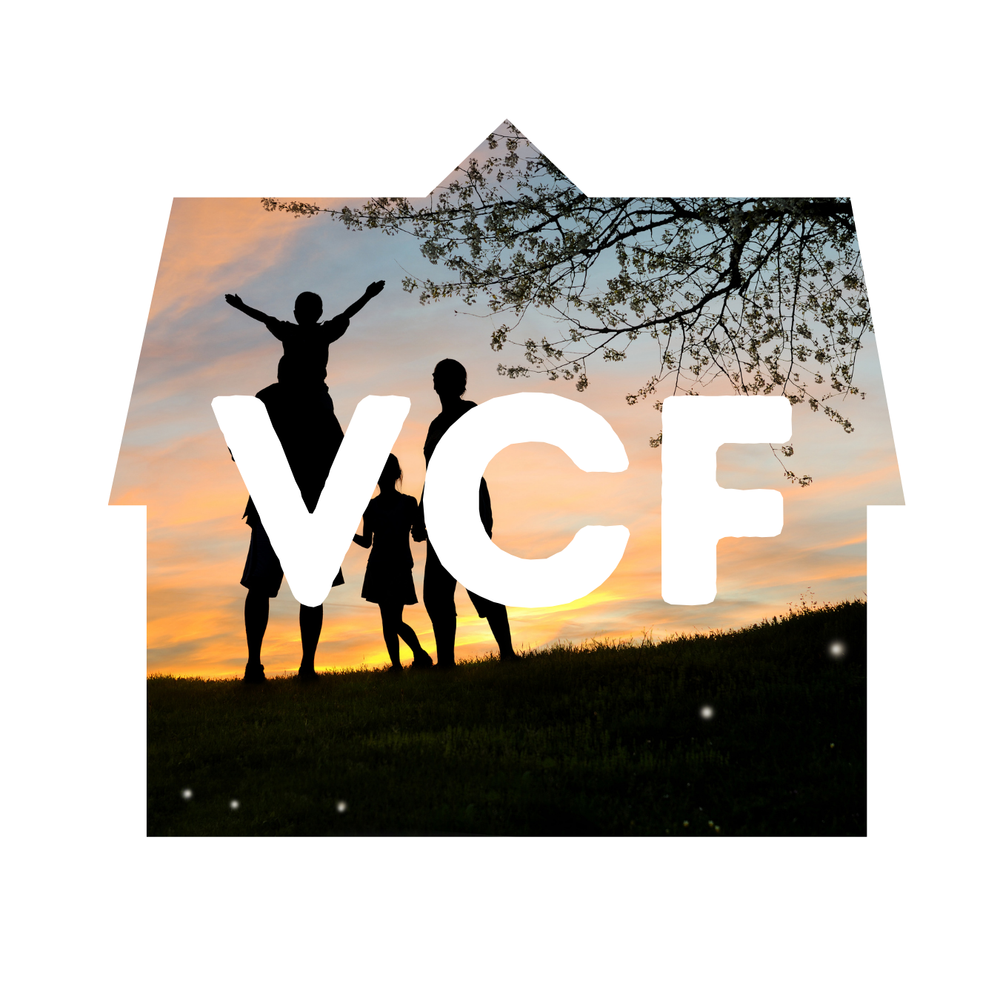

La pobreza no es solo la falta de ingresos, sino una vulnerabilidad multidimensional que afecta el acceso a la salud, la educación y una vivienda digna. Comprender sus causas es el primer paso para construir puentes de oportunidad y transformar el futuro de quienes más lo necesitan.
Hablar de la pobreza es reconocer una de las crisis más profundas y persistentes de nuestra sociedad. A menudo, se reduce a una cifra económica, pero la realidad es mucho más compleja: es un ciclo intergeneracional que limita el potencial humano y priva a las comunidades de sus derechos más fundamentales.
Esta problemática se manifiesta en la falta de acceso a servicios básicos como agua potable, nutrición adecuada y una educación de calidad que permita el desarrollo de habilidades para el futuro. Sin estas herramientas, las personas se encuentran atrapadas en una lucha diaria por la supervivencia, donde la planificación a largo plazo se convierte en un lujo inalcanzable.
En Vidas Con Futuro, creemos que la pobreza no es una condición permanente, sino una circunstancia que podemos transformar juntos. Al abordar no solo los síntomas, sino también las causas estructurales, podemos crear un entorno donde cada individuo tenga la oportunidad de prosperar, aportar su talento a la sociedad y vivir con la dignidad que merece.
Estos datos no son solo números. Representan vidas, sueños pausados y familias que esperan una oportunidad. En Vidas Con Futuro, trabajamos para cambiar estas estadísticas mediante programas de intervención directa y apoyo comunitario.
En Vidas Con Futuro, nos comprometemos a ayudar todo lo posible a las familias mas necesitadas para que tengan una oportunidad de tener la vida que realmente se merecen.